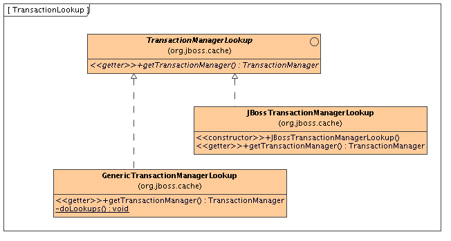

JBoss Cache can be configured to use and participate in JTA compliant transactions. Alternatively, if transaction support is disabled, it is equivalent to using autocommit in JDBC calls, where modifications are potentially replicated after every change (if replication is enabled).
What JBoss Cache does on every incoming call is:
Retrieve the current javax.transaction.Transaction associated with the thread
If not already done, register a javax.transaction.Synchronization with the transaction manager to be notified when a transaction commits or is rolled back.
In order to do this, the cache has to be provided with a reference to environment's javax.transaction.TransactionManager. This is usually done by configuring the cache with the class name of an implementation of the TransactionManagerLookup interface. When the cache starts, it will create an instance of this class and invoke its getTransactionManager() method, which returns a reference to the TransactionManager.

JBoss Cache ships with JBossTransactionManagerLookup and GenericTransactionManagerLookup. The JBossTransactionManagerLookup is able to bind to a running EAP instance and retrieve a TransactionManager while the GenericTransactionManagerLookup is able to bind to most popular Java EE application servers and provide the same functionality. A dummy implementation - DummyTransactionManagerLookup - is also provided for unit tests. Being a dummy, this is not recommended for production use a it has some severe limitations to do with concurrent transactions and recovery.
An alternative to configuring a TransactionManagerLookup is to programmatically inject a reference to the TransactionManager into the Configuration object's RuntimeConfig element:
TransactionManager tm = getTransactionManager(); // magic method
cache.getConfiguration().getRuntimeConfig().setTransactionManager(tm);
Injecting the TransactionManager is the recommended approach when the Configuration is built by some sort of IOC container that already has a reference to the TransactionManager.